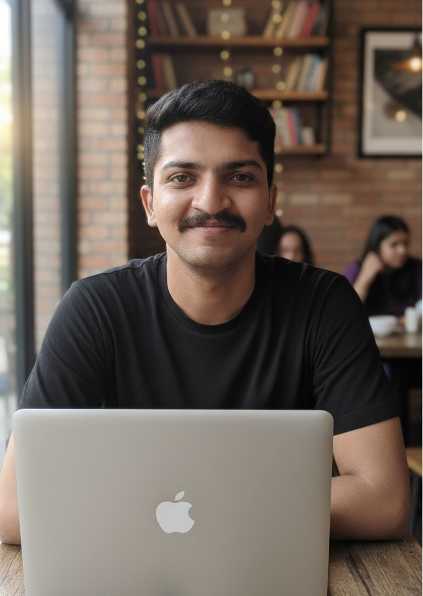

UI UX Alchemist
I started my career writing code. I found my calling designing the human experiences that sit on top of it.
At a glance.
From Algorithms to Aesthetics
Bridging engineering logic with human-centered design.
Software Engineering

Building robust, scalable architectures and writing clean algorithms.
UI/UX Design
Crafting intuitive user experiences through research and visual iteration.
The developer's biggest advantage.
My designs aren't just beautiful in Figma — they are pragmatic, scalable, and completely ready for production. I speak the language of engineers, which turns handoff from friction into seamless collaboration.
People First
Every experience is designed around real user needs and behaviors, not assumptions.
Visual Clarity
I create intuitive interfaces by removing unnecessary friction and cognitive load.
Measured Impact
Delivering measurable value through purposeful, data-informed design decisions.
Experience
Two years of shipping real products for real users.
UI/UX Designer
- Led end-to-end UX design for multiple mission-critical internal tools used by engineers.
- Established a design system that reduced UI inconsistencies by 70% across product lines.
- Reduced design-to-development handoff time by 40% through structured Figma libraries.
UI/UX Designer Intern
- Designed mobile apps and web dashboards for early-stage startups.
- Delivered pixel-perfect UI kits and design systems in Figma for developer handoff.
- Worked directly with founders to translate business goals into user experiences.
Personal Projects & Freelancer
- Built 10+ personal design projects focused on healthcare, finance, and productivity.
- Completed advanced courses in UX Research, Interaction Design, and Design Systems.
- Contributed to live real-project and design community.

"Mala firayala khup avadta."
I’ve always been curious about people — how they move, how they interact, and how small details shape their behavior.


Traveling across different places has helped me see patterns beyond screens — from how people use public systems to how they adapt to constraints in everyday life. These observations directly influence how I approach design.
"Good products start with good conversations."
Currently shaping products at DRDL, but always open to new opportunities and great conversations.